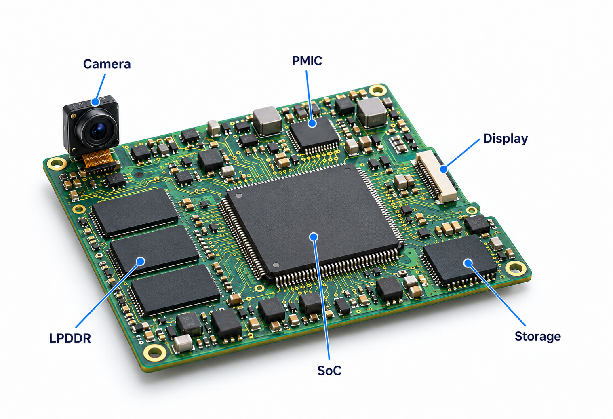

10-1. 제품 요구와 시스템 예산
제품 예산은 같은 단위로 닫습니다
성능 목표와 전력·메모리·열·비용 한계를 함께 기록한 뒤 hardware와 software의 책임을 나눕니다. 각 요구에는 측정 workload, 조건, 결과 단위와 통과 기준이 필요합니다.

Throughput 예산
카메라의 연속 입력을 수락할 지속 전송률
Frame 시간 예산
입력 주기와 처리 deadline을 구분해 기록
Memory 예산
두 frame buffer에 추가 workspace 필요
Power · Cost 예산
Active / idle 전력, 열 조건과 BOM을 함께 정의합니다.
측정 조건과 목표를 명시제품 요구에서 칩 제약으로
기능 설명을 수치와 관측 조건이 있는 요구로 바꿉니다. 요구·구조·검증 근거 사이의 연결을 잃지 않습니다.
제품 요구
- 해상도 / frame rate
- 실시간 처리 기능
- 전력 / 열 / 단가
- 배터리 / 폼팩터
시스템 요구사항
- Throughput (MB/s)
- Latency (ms)
- Memory (byte)
- Power (W)
아키텍처 분배
- HW / SW 책임
- 자원별 예산
- 인터페이스 계약
- 병렬 처리와 소유권
칩 제약 조건
- 메모리 크기 / 대역폭
- 블록별 성능
- 전력 / 열 한계
- 면적 / 비용 목표
제품 요구와 전송 예산
한 frame의 데이터 크기와 지속 입력률을 계산합니다. Capture·Transfer·Compute·Display의 latency 합계와, 각 stage가 독립적으로 겹칠 때의 steady-state 처리 주기를 각각 확인합니다.
교육 조건: Capture 2 ms, Display 3 ms, Transfer는 frame byte ÷ 입력한 지속 전송률입니다. 1.25 B/pixel은 10-bit packed 데이터 가정입니다. MB는 10⁶ byte, MiB는 2²⁰ byte입니다. Queue·동기화·공유 자원 경합은 별도입니다.
요구사항과 검증 연결
| 항목 | 예시 요구 | 관측 및 통과 조건 |
|---|---|---|
| 입력 | 1920 × 1080 × 1.25 B × 60 fps | 155.52 MB/s 이상 지속 수락 |
| Latency | Frame 단위 deadline을 별도 지정 | 전송·queue·연산·동기화의 end-to-end 시간 |
| Memory | Double buffer + workspace | 2 × frame byte + scratch 크기 |
| 전력 / 열 | Active / idle 예산 | 동일 전압·온도·workload에서 측정 |